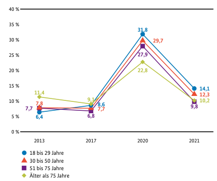
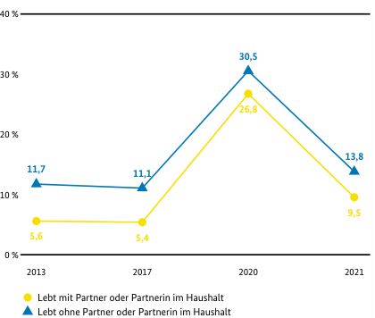

Unterscheiden: Dimensionen, Ausprägungen, Typen
Ein empirisches Problem: Einsamkeit und Gesellschaft
 
- 27% junger Frauen und 21% junger Männer gab in der 19. Shell-Jugendstudie an, sich oft einsam zu fühlen (Albert et al. 2024).
- Insgesamt steigt der Anteil der einsamer Personen in der Bevölkerung; Abb. links; Quelle: Einsamkeitsbarometer (2024).
- Es ist jedoch bis jetzt unklar, wie Einsamkeit adäquat erfasst werden kann (Walsch et al., 2025).
Einsamkeit - Konzeptspezifikation
Wir übernehmen die Definition von Walsch et al. (2025, 175).
Loneliness is typically defined as the subjective state associated with deficits in social connection, characterized by perceived discrepancies between one’s desired and objective social relationships.
Die Autoren grenzen dieses Konzept dann von Isolation wie folgt ab:
Loneliness is distinct from isolation, which is the objective lack of social or emotional connections. Loneliness encompasses more than just physical isolation, reflecting an individual’s relational preferences, cognitions, and desires.
Einsamkeit – alles nicht so einfach…
{kind=link}
Wenn Einsamkeit ein unerfülltes Bedürfnis nach Verbindung ist, dann helfen uns die Netzwerkstrukturen, Einbettungen in Organsisationen, oder quantitative Erfassungen sozialer Kontakte nur sehr bedingt weiter.
In den Abbildungen links können Sie nicht erkennen, wer von den Personen (=Punkte) sich einsamer fühlt als andere. Wir können damit Isolation studieren, aber nicht Einsamkeit.
Einsamkeit als unerfülltes Bedürfnis
{kind=link}
Ausprägungen von Einsamkeit
Durch Unterscheidung von emotionaler und sozialer Einsamkeit können wir mindestens (!) vier Ausprägungen von Einsamkeit unterscheiden:
| Sozial einsam | |||
|---|---|---|---|
| ja | nein | ||
| Emotional einsam | ja | ||
| nein | |||
Keep it simple?
Warum fragen wir nicht einfach “Wie oft fühlen Sie sich einsam?”
Tipps aus der Praxis
Kann man machen (Halvorson et al., 2024)!
Aber:
- Wir können dann verschiedene Fälle von Einsamkeit nicht mehr unterscheiden - wenn uns das wichtig ist (Walsch et al., 2025).
- Sehr wahrscheinlich verneinen viele Personen diese Frage, obwohl sie sich einsam fühlen. van den Broek et al. (2024) zeigen experimentell, dass sich bei der “einfachen” Messung von Einsamkeit circa 6% der Befragten und bei der “komplexen” Messung 13% der Befragten als einsam einstuften.
Grundsätzliche Fragen zur Erfassung von Eigenschaften
- Aus wie vielen Elementen besteht die Eigenschaft, die erfasst werden soll (Dimensionalität)?
- Wie lassen sich die Ausprägungen der Eigenschaft und/oder seiner Elemente adäquat erfassen (Messung/Skalierung).
Dimensionen
Nehmen wir an, dass eine Eigenschaft nur aus einem Element aufgebaut ist, das sich auch nicht in kleinere Bestandteile zerlegen lässt, dann bezeichnen wir diese als eindimensional (Alter, Geschlecht, Arbeitsstunden).
Eigenschaften können jedoch auch auf einer Kombination von Elementen basieren, die für sich jeweils eigene Wirkungen oder Bedeutungen haben und sich ggf. auch unabhängig voneinander verändern oder sich gegenseitig kompensieren können. In diesem Fall liegt eine mehrdimensionale Eigenschaft vor (sozialer Status, Persönlichkeitsstruktur).
Dimensionen & Ausprägungen
{kind=link}
Dimensionen & Ausprägungen
Ausprägungen und verschiedene Dimensionen sind nicht das Gleiche! In der Tabelle werden vier verschiedene Ausprägungen von Gesamteinsamkeit erfasst, die auf zwei verschiedene Dimensionen von Einsamkeit mit jeweils zwei Ausprägungen beruhen.
| Sozial einsam | |||
|---|---|---|---|
| ja | nein | ||
| Emotional einsam | ja | ||
| nein | |||
Dimensionen & Ausprägungen
{kind=link}
Beispiel: Intelligenzmessung

Beispiel: berufliche Selbstregulation
{kind=link}
Unterschiedlichkeit von Eigenschaften und Ausprägungen
Personen unterscheiden sich pro Dimension hinsichtlich einer Eigenschaft. Daher müssen wir für jede Dimension diese Unterschiedlichkeit hinsichtlich ihrer relevanten Ausprägungen1 erfassen.
Ausprägungen sind keine Beobachtungen, sondern wie wir uns die Unterschiedlichkeit von Eigenschaften vorstellen (siehe u.a. die “Debatten” um Gender).
Ausprägungen
Wir können Ausprägungen spezifische Informationen zuschreiben. Die für uns relevanteste Information ist, wie die Abstände zwischen den Ausprägungen strukturiert sind.
{kind=link}
Ausprägungen
Eine etwas detaillierete Unterscheidung der festgelegten Eigenschaften ermöglicht darüber hinaus folgende Differenzierung:
| Festgelegte Eigenschaft | ||||||
|---|---|---|---|---|---|---|
| Skalenniveau | Subtyp | Identität | Ränge | Abstände | Nullpunkt | Beispiel |
| Nominal | ja | nein | nein | nein | Familienstand, Länder | |
| Ordinal | ja | ja | nein | nein | Schulnoten, Machtpositionen | |
| Metrisch | Intervall | ja | ja | ja | nein | Prestige, IQ-Scores |
| Ratio | ja | ja | ja | ja | Alter, Arbeitslosigkeitsdauer | |